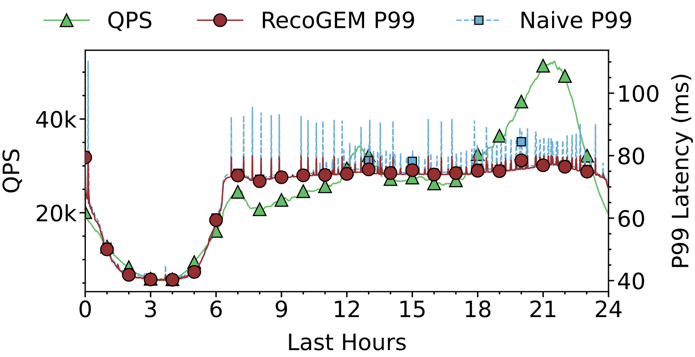
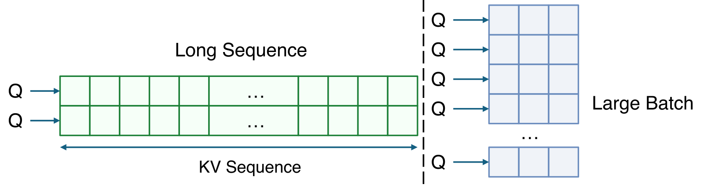
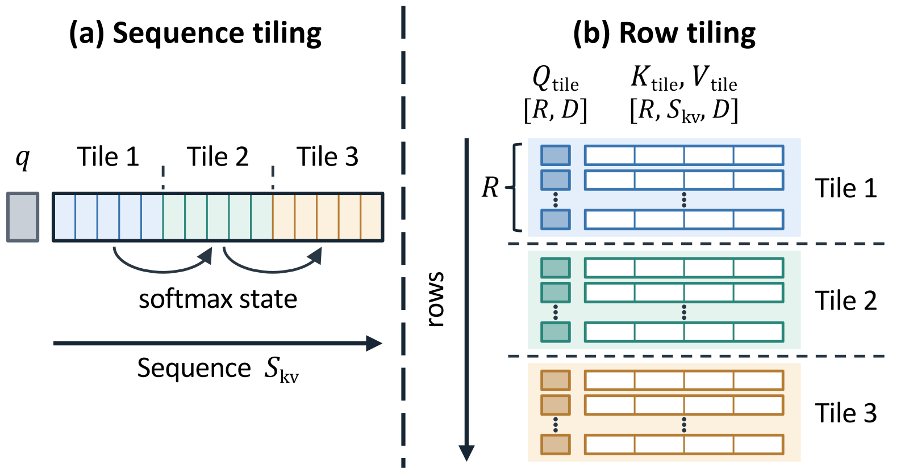
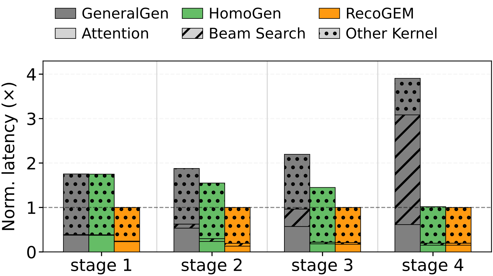

Contents · 8 sections
1The six stages of one recommendation request2The handoff between steps goes to a separate runtime3Weights update over a hundred times a minute, and each request stays on one version4Why a large number of short attention rows is harder than one long sequence5Compiling a separate execution plan for each step's shape6Two-stage Top-K: picking candidates from 4.2 million scores without changing the result7End to end, throughput is 1.84 to 2.88 times GeneralGen's8After deployment, the bottleneck returned to dense decodingSHARE
Generative recommendation looks like an LLM generating text token by token, but its compute goes to huge numbers of very short attention computations and to picking hundreds of candidates at every step; LLM inference frameworks do not handle either well, so Kuaishou gave up adapting them and built a dedicated serving system, RecoGEM.
A traditional recommender scores candidate items, narrowing the range stage by stage through retrieval, pre-ranking and ranking, and the early stages can only compute coarsely to save compute. Generative recommendation (GR) takes a different route: the model reads the user context (static profile, short-term behavior, long-term interests) and directly generates the IDs of the items to recommend. Each item is represented by a short string of codes called a Semantic ID (SID). Illustration: an iPhone 18 has a 3-digit SID, where the first digit means "phone", the second "iOS", and the third pins down this phone. The model generates one digit at a time, each digit has its own vocabulary (all the codes that digit can take), and earlier digits separate broad categories while later ones narrow down to a specific item.
The difficulty is that one request (one batch of recommendations for one user) must recommend many items at once, so the model has to follow many code strings at the same time. At each digit, the system keeps a set of candidate prefixes, meaning the digits generated so far (this is called beam search), scores each prefix combined with every code in this digit's vocabulary, and picks the prefixes that continue to the next step. Illustration: step 1 keeps two prefixes, "phone" and "appliance"; step 2 extends each with 4 possible codes, giving 8 continuations, and picks 2 of them. Production scale is far larger: one Kuaishou configuration uses 512 prefixes with 8192 codes each, so a single step of one request compares about 4.2 million scores.
To serve such models, the closest off-the-shelf option is an LLM inference framework, whose request scheduling, KV cache management and decoding optimizations are mature. These frameworks assume every step does the same thing: read the current sequence, predict the next token from one vocabulary, and append it. The phone example does not fit such a loop. After step 2, the survivors might be "phone-iOS" and "phone-Android"; both prefixes must inherit the KV cache of "phone" and continue separately, while the KV cache of "appliance" must be discarded. In other words, at the end of each step the KV cache has to be copied and discarded according to the surviving prefixes, not just extended by one token. The decoding loop of an LLM framework has no such stage, so using one for GR means writing an extra layer of logic outside the loop.
According to the paper, Kuaishou first adapted an LLM framework in exactly this way and later abandoned that route. Fitting custom inputs and outputs, the state handoff between steps, live updates and recommendation business logic into an LLM engine took more engineering than writing a GR serving system from scratch. Performance suffered too: the adapted TensorRT-LLM runs beam search on the CPU and then rearranges the KV cache according to the selected prefixes, a cost paid at every step that grows with the number of surviving prefixes.
RecoGEM's design has two halves. Work between steps (keeping the candidate prefixes and their KV, applying live updates) goes to a dedicated runtime, and the execution engine handles only tensor computation. Inside the engine, attention, the execution plan (the execution scheme a compiler fixes for given input shapes) and candidate selection are each optimized for the real tensor shapes of each GR step: how many rows, how long each row is, how many candidates to pick. OneModel is a 0.2B-parameter Kuaishou production model; serving it at batch 32, a single RecoGEM instance reaches 1,053 QPS with a P99 of 30.8 ms. The comparison version, GeneralGen, is the same system using a single-shape execution plan and generic GPU kernels, and RecoGEM's throughput is 2.88 times higher. So for the same model, rewriting attention, the execution plan and candidate selection to fit the shapes alone makes a nearly 3× throughput difference. The system has been in production for over nine months, serving 400 million daily active users.
The six stages of one recommendation request

The rest of the piece keeps using the phone recommendation request from above. The illustrative configuration: a 3-digit SID, a vocabulary of 4 codes per digit, a beam width of 2 (2 prefixes kept per step), and a single request.
Two terms recur. Cross-KV is the KV cache obtained by encoding the user context once; it stays fixed for the whole request. Self-KV is each candidate prefix's own KV cache; it travels with the prefix and becomes useless when the prefix is eliminated.
| Stage | Input | What it does | Output | When |
|---|---|---|---|---|
| Release | PyTorch model graph, serving policy | Generates the deployment contract and compiles the engine for each step's shapes | Validated engine and contract | Offline, at model release |
| Encode context | User static profile, short-term behavior, long-term interests | The encoder runs once | Cross-KV | Once per request |
| Decode one digit | Prefixes, self-KV, cross-KV | Runs the decoder and scores every continuation of every prefix | Score matrix (2 rows by 4 columns at step 2) | Once per step |
| Select candidates | Score matrix | Two-stage Top-K | Surviving prefixes and their parent row indices | Once per step |
| Prepare next step | Parent row indices of survivors, self-KV | Copies the survivors' self-KV together by parent row | Compactly arranged self-KV | Once per step |
| Map to items | Completed SIDs | Looks up items in the catalog | Recommendations | Once per request |
At the end of step 2, the system holds intermediate results like this (illustrative; the score is the cumulative score up to this step, higher is better; the parent row is the row of the previous step's score matrix this prefix grew from):
Surviving prefix Score Parent row
phone-iOS 9 row 0 (phone)
phone-Android 8 row 0 (phone)In the table, "decode one digit" and "select candidates" are done by the engine, and "prepare next step" by the runtime. An LLM framework hides all of these behind one loop, while RecoGEM exposes the boundary between steps. Once the boundary is exposed, the kernels and execution plan for each step can be chosen separately, and every later optimization relies on this boundary.
The handoff between steps goes to a separate runtime
After step 2's selection, the self-KV buffer still holds two rows: row 0 is "phone" and row 1 is "appliance". The next step, however, needs two copies of the "phone" KV, because both iOS and Android continue from "phone". Marking the "appliance" row as invalid is not enough: the "phone" KV must appear twice, and the original buffer holds only one copy.
RecoGEM solves this with two buffers. Using the parent row indices of the surviving prefixes, the runtime takes the corresponding rows of self-KV from the active buffer and copies them into a standby buffer, which becomes the next step's input. Illustration: Hoot says

Illustrative: 2 prefixes, 3 continuations each, 2 kept. The names and scores are illustrative and differ from the phone and appliance example in the text, and multiplying probabilities into an accumulated score is only for easy arithmetic.
Source
paper §2.2 Observation 1 (survivors inherit the parent sequence's KV cache, which is dropped if none survive; the iOS/Android example); §3.2 double-buffered compaction (survivor indices gather-copy into a standby buffer); Figures 4 and 11Active buffer: [phone KV, appliance KV]
Survivors' parents: [0, 0]
Standby buffer: [phone KV, phone KV]At step 3 the engine reads 2 densely packed rows, and the "appliance" KV no longer enters the computation. The runtime also pipelines the copy: while one row of KV is being copied, the runtime prepares the source address of the next surviving prefix, so the two overlap in time.
To do this step-to-step handoff for Kuaishou's more than ten GR model families, the runtime must know what each engine takes as input and produces as output. Hard-coding this into the runtime would mean changing the serving program for every new model. RecoGEM instead generates a deployment contract automatically from the model graph and a small serving policy (batch size, quantization precision, number of candidates, parallel layout). The contract holds four kinds of records, roughly like this (illustrative: the four kinds come from the paper, the syntax and values are made up):
weight_binding: decoder.layer0.attn.q -> tensor_12
io_mapping: step2.output.self_kv -> step3.input.past_kv
request_batching: max_batch = 32
pipeline_flow: context -> step1 -> step2 -> step3When the runtime loads a deployment, it first checks the compiled engine against the contract, and uses it only if weight binding, input-output mapping, batch size and flow all match. After that, how requests are organized, and which output of the previous step feeds which input of the next, all follow the contract.
Weights update over a hundred times a minute, and each request stays on one version
GR inherits traditional recommendation's demand for freshness: model weights, SID vocabularies and the candidate selection policy (how candidates are expanded and kept at each step) all change while traffic is flowing. In Kuaishou's GR production cluster, live weight updates (the paper calls them refits) peak at 107 per minute, and in the busiest hour each server receives 346 GB of FP32 weight data. At this rate, the old approach of draining traffic, replacing the engine and restoring traffic cannot keep up. Around twenty beam-search policy variants have also been tried in production, and hard-coding the policy into the program would require a release for every change.
Vocabulary updates add one more requirement: the version must stay consistent within a request. An SID vocabulary is a grouping learned from item representations, and once it is relearned, the meaning of codes can change. Illustration: in the old vocabulary, code 17 in the first digit means "phone"; after the refresh, 17 means "appliance". If the phone request generated 17 at step 1 under the old vocabulary and then looked up the item with the new version after decoding, it would get an appliance. So each request must use the same version of weights, vocabulary and policy from the first step through item mapping.
RecoGEM's rule is simple: a new version (the compiled engine, plus the contract if it changed) is used by requests only after it passes the contract check. The runtime prepares the new version outside the path that serves requests. At cutover, it briefly stops admitting new requests, lets requests already issued finish on the old version, then atomically switches the engine pointer, and the contract pointer too if the contract changed. Queued requests then enter the new version, and the old version is retired once no request references it. The phone request runs entirely on the old version, and the requests behind it run entirely on the new one. Unlike the old draining approach, the new version has already been compiled and validated on the side, so cutover only waits for in-flight requests to finish and swaps a pointer, with no new release of the serving program.

Kuaishou's earlier update method rebuilt the entire execution engine and pushed it straight to serving instances. Updates therefore interfered with running inference, and spikes recurred during update periods, with P99 spikes 2 to 3 times bigger. After switching to pointer cutover, the 24-hour production trace shows traffic moving from about 5,000 QPS to over 50,000 QPS, with P99 below 80 ms throughout and no visible SLA violation. The cluster's all-time peak is 60,000 QPS, also with P99 below 80 ms. So the update method itself affects tail latency: with new versions prepared outside the request path, the updates throughout the day on this trace did not push P99 above 80 ms.
Why a large number of short attention rows is harder than one long sequence
With the runtime handling the work between steps, the engine's first cost is self-attention. Here one candidate prefix reading its own prefix under one head counts as one row. In LLM decoding the pressure is on KV length: one sequence reads a long prompt and the history generated so far. In GR the pressure moves to the number of rows: each row reads only the few SID digits generated so far, but the row count equals the number of requests times the beam width times the number of heads. The paper calls this dimension inversion: LLMs have few long rows, GR has many short ones.

Many rows sound ideal for batched computation; the problem is how existing kernels amortize overhead. A tile is a small block of data loaded into the GPU's on-chip memory and computed together. Generic attention kernels cut tiles along one long sequence and rely on its length to amortize launch overhead. If each of GR's short rows were computed separately, a row would involve only a few dot products, a tiny softmax and one weighted sum over V, too little computation to cover the launch overhead.
Why not concatenate the short rows into one long sequence? Because a generic kernel applies softmax across a whole row, while each candidate's softmax must be computed on its own. Illustration: candidate A's raw scores over two positions are (1, 1), and candidate B's are (3, 3); computed separately, each candidate has weight 0.5 on each of its two positions. If they are concatenated into one row for softmax, B pushes A's weight down to about 0.06 per position. Candidate A's attention output is then changed by an unrelated candidate B.

Row-tiled attention packs R complete short rows into one tile; in the paper's implementation, each tile holds 64 rows. Within a tile, each row finishes its own dot products, softmax and weighted sum, intermediate results stay on chip, and only the output is written back to GPU memory. Illustration: there are 8 rows in total, the fixed setup cost of handling one tile (staging data on chip, scheduling the work) is 10, and each row's computation costs 1. One row per tile costs 8×(10+1)=88 in total. Packing 4 rows per tile costs 2×(10+4)=28. The computation per row is unchanged; what shrinks is how often the fixed cost is paid, which the paper describes as amortizing setup overhead across independent rows. Hoot says
- KV positions merged together
All 12 positions compete under one denominator, so different candidates leak into each other.
- rows of tile 1
- rows of tile 2
- one tile: the unit of staging and scheduling
Tiles pass no softmax normalization state, so loading can overlap computing. That does not mean no state at all: in the evaluation, blocks stay alive across tiles through a persistent scheduler.
- the normalization range of one softmax
- Why rows cannot be merged (illustrative numbers): say row A's three positions have exp scores 6, 1, 1 and row B's have 3, 2, 1. Computed separately, A's first position gets weight 6/8=0.75 and B's gets 3/6=0.5. Merged into one softmax, both denominators become 14, the two weights fall to 0.43 and 0.21, and row B's total weight is only 0.43 when it should be 1.
- What the tile saves: the paper's largest setting has 16384×64, about one million rows, and the earlier path made each row an independent work unit. With 64 rows per tile only 16384 tiles remain, and block scheduling and pipeline setup are shared across those rows.
Rows are the short rows after folding batch and heads; columns are the self-attention KV positions a row can read. Illustrative: 4 rows, S_kv=3, 2 rows per tile. This shows one decoding step only; row count and prefix length change from step to step. Short rows apply to self-attention only: cross-KV comes from encoding the user context, is not a SID prefix, and is not drawn here.
Source
paper §2.3 Observation 3 (each candidate's softmax must stay isolated); §4.1 row-tiled self-attention (tiles need no normalization state from one another); §2.1 and §3.2 (cross-KV comes from context encoding); §5.4(iii) (roughly one million rows, 64 rows per tile, persistent scheduler); Figures 12 and 13Packing brings a second benefit. Each row's softmax finishes inside its tile, so no normalization state passes between tiles, which lets the system compute tile k while loading tile k+1. Tiles cut along one long sequence belong to the same row and must maintain softmax normalization state across tiles, so they are not independent of each other.
The standalone attention results can be read on two levels. The benchmark uses 16384 sequences, 64 heads and 64 dimensions per head, about one million short rows in all. Row-tiled attention takes 0.142 ms at prefix length 1 and stays below 0.85 ms up to prefix length 8. In the main range of prefix lengths up to 4, it is 7.2 to 9.4 times faster than Kuaishou's earlier version that gave each row its own unit of work. Both do the same computation per row, so with this many rows, the scheduling and launch overhead of one work unit per row dominated, and packing rows and overlapping tiles removes exactly that. In the same benchmark it is up to 154.4 times faster than PyTorch's SDPA path, whose time barely changes with prefix length in the short-prefix range. This indicates that the generic path spends most of its time on fixed tile handling, with the few useful dot products a small share.
Compiling a separate execution plan for each step's shape
Every step's shape for the phone request is fully known once the deployment configuration is fixed (illustrative; BoS counts as the first position of the prefix):
| Step | Prefix length read | Rows in | Candidates per row | Rows kept |
|---|---|---|---|---|
| Step 1 | 1 | 1 | 4 | 2 |
| Step 2 | 2 | 2 | 4 | 2 |
| Step 3 | 3 | 2 | 4 | 2 |
An LLM engine calls the same compiled interface at every step, so it can only compile one plan valid for all positions. Applied to this table, that plan must cover prefix lengths 1 to 3 and row counts 1 to 2 at once, and the softmax length is only known at run time. Each step's actual shape is narrow, yet the plan is optimized for the union of all three steps.
Step-granular planning turns this table into a build artifact, in three stages. First, it builds a broad compute graph from the PyTorch training graph that can represent any shape. Next, at build time it dry-runs from the first step to the last, recording the tensor dimensions each step produces as the next step's input. Finally, it generates a dedicated compute graph for each step's dimensions. The number of requests varies with traffic, so that dimension stays dynamic and the build artifact can still handle varying traffic.
This shape table is passed directly to the kernels described earlier. Since step 3's prefix length is known to be 3, the engine can bind an attention variant with softmax length fixed at 3 for this step, without leaving room for variable length. Each step's candidate width and kept beam width are also known, so candidate selection can likewise be compiled for the exact shape.
The ablation uses HomoGen, which keeps all the dedicated kernels and only swaps per-step compilation back to a single-shape plan. For OneModel at batch 32, average decode latency rises from RecoGEM's 30.4 ms to 39.5 ms. OneModel's SID has 4 digits, and latency in each of the first three steps is more than 40% higher. The paper's explanation is that the early steps differ in kept beam width and candidate width, so a single-shape plan is furthest from their real shapes, and the gain from per-step compilation falls mainly on the early steps.
Two-stage Top-K: picking candidates from 4.2 million scores without changing the result
After each step is scored, the next step cannot start until beam search selects the surviving prefixes, so selection speed counts directly toward latency. LLMs usually select fewer than 10 tokens; GR usually selects 128 or more prefixes per step. The most direct approach flattens a request's score matrix (W prefixes, each extended with C codes) into one row and runs one large Top-K. The result is correct, but with W=512 and C=8192 the flattened row has about 4.2 million scores, 8 MiB in FP16, far beyond the local memory of a GPU thread block, so selection turns into repeated reads and writes of much slower global GPU memory.
RecoGEM selects in two stages: the first takes the top K within each prefix's row, and the second picks K again from all scores that remain. Back to step 2 of the phone request (illustrative, K=2):
Row 0 (phone): 9, 8, 3, 1 -> keep 9, 8 within the row
Row 1 (appliance): 7, 6, 5, 2 -> keep 7, 6 within the row
Merge 9, 8, 7, 6, pick top 2 -> 9, 8The first stage cuts 8 scores to 4, and the final 9 and 8 are exactly "phone-iOS" and "phone-Android" from the intermediate results above. Dropping the 5 in the appliance row is safe, because 7 and 6 in the same row are already higher, so it cannot enter the global top 2.
Every score dropped in the first stage is already beaten by K scores in its own row, so the two-stage selection gives exactly the same result as a global Top-K.
The two stages have different computational shapes, so RecoGEM uses two paths. The first stage is many independent rows of bounded width: each row's scores go into shared memory, a radix method narrows them round by round by value range, and several rows can share one thread block (the paper calls this flash radix). The second stage is one wide request-level row, split across multiple thread blocks that each select their top K before the results are merged (multi-block radix); by the same reasoning as above, the top K of each block together must contain the global top K.
In a standalone test with a vocabulary of 8192, at batch 32 and beam 512 RecoGEM takes 0.618 ms, 2.08 times faster than PyTorch ATen and 1.70 times faster than standard radix without per-row splitting. At beam 1024 it takes 1.307 ms. The Bitonic path, based on pairwise compare-and-swap, is 20.6 to 26.6 times slower than RecoGEM when K reaches 1024. So for large-K selection like GR's, the wrong algorithm can cost over twenty times, and with radix chosen, splitting by row is still another 1.70 times faster.
End to end, throughput is 1.84 to 2.88 times GeneralGen's
The end-to-end comparison uses two production models, OneRec-v2 (4B parameters) and OneModel (0.2B parameters) from above, with the table fixed at batch 32. It compares RecoGEM with GeneralGen, which keeps RecoGEM's other modules and only switches to a single-shape plan and generic kernels.
| Model (batch 32) | RecoGEM P99 | RecoGEM QPS | GeneralGen P99 | GeneralGen QPS | QPS ratio |
|---|---|---|---|---|---|
| OneRec-v2 (4B parameters) | 61.5 ms | 526 | 112.5 ms | 286 | 1.84× |
| OneModel (0.2B parameters) | 30.8 ms | 1,053 | 89.0 ms | 366 | 2.88× |
OneRec-v2's production target is a P99 of at most 100 ms. RecoGEM stays below this line across the whole batch sweep from 1 to 32, while GeneralGen already exceeds it at batch 32. For the 4B-parameter OneRec-v2, then, shape-aware optimization decides whether the latency target can still be met at batch 32. Both ratios are against Kuaishou's own GeneralGen and answer how much throughput shape specialization is worth; recommendation quality for the same model is not part of this comparison.
Against external options, RecoGEM leads by more. TorchEager (running PyTorch eager mode directly) and the adapted TensorRT-LLM both show clearly higher latency and lower throughput on both models. TensorRT-LLM's latency rises quickly with batch and its QPS plateaus early, consistent with the cost of running beam search on the CPU and rearranging the KV cache described earlier.

OneModel's SID has 4 digits, and broken down by step, the two kinds of optimization pay off in different places. The gain from per-step compilation is mainly in the early steps, as covered above. The gain from dedicated attention and candidate selection is mainly in the later steps: the last step takes 13.8 ms under RecoGEM and 54.0 ms under GeneralGen, with the extra time spent mostly on candidate selection. So the overall gap can be traced to specific steps and specific computations.
After deployment, the bottleneck returned to dense decoding
The paper ends with numbers on how the bottleneck shifted, which returns to the opening question of where the compute goes. In traditional scoring-model (DLRM) serving, sparse embedding lookup and feature materialization often take over 50% of total latency; in Kuaishou's GR deployment, embedding lookup is under 10%. Another GR serving system, xGR, reports candidate selection at over 40% of serving time; after RecoGEM's optimizations, this drops below 10% even for very large candidate sets. According to the authors, GR's cost first moved to the decoder and candidate selection, and once candidate selection was optimized, the pressure returned to dense decode computation.
The authors argue that these optimizations depend on the shape of the workload rather than on recommendation semantics: few decoding steps, many short sequences, and selection from a fixed vocabulary at each step. On that view, workloads such as generative retrieval could use the same kernels.
The takeaway for practitioners is concrete: GR's pressure lies in huge numbers of short attention rows and large-K selection at every step, and long KV is not the bottleneck here. The loop of an LLM framework hides the differences between steps. Only by exposing the boundary between steps can RecoGEM shape each step's attention, candidate selection and execution plan to that step.
How did this read for you?
Hoot made a note. Thanks for the feedback.
One tap, no sign-in; tap again to undo. Only anonymous counts are kept, never who you are.
Discussion
Add experiment details, reproduction notes or a different take. Requires a GitHub sign-in.
Loading the discussion…